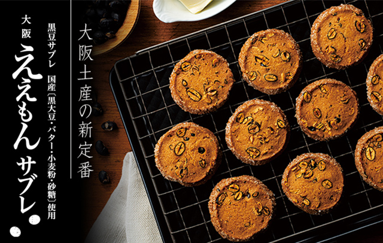
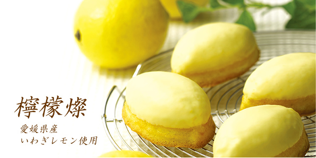

■ ええもんサブレ
6枚入 税込713円（本体価格660円）
10枚入 税込1,188円（本体価格1,100円）
20枚入 税込2,376円（本体価格2,200円）
30枚入 税込3,564円（本体価格3,300円）

サブレはフランス語でsable→砂で覆われたという意味合いをもつことから、砂がざくっと崩れるような食感から名付けられたとする説に由来しているそうです。
五感ではその食感が十分に楽しめるように熟練のパティシエが試行錯誤を繰り返しながら、できうる限り国産素材を使い、どこか懐かしい素朴な味わいのサブレを目指しました。
北海道産発酵バターをはじめ、国産黒大豆とてんさい糖、国産小麦や卵などアーモンド以外の主原料をすべて国産にこだわりおつくりした日本のサブレでございます。軽やかながらもザクザクッとした食感が香ばしいボリュームたっぷりの自信作です。
「ええもん」とはなにわ言葉でいいもの、価値のあるもの、上等なものという意味でわたくしたちは「ええもんあげようか」と言って子供の頃、飴やお菓子をもらったものです。生粋のパティシエがつくる大阪発日本の洋菓子を御賞味ください。
●
特定原材料等28品目／ 小麦 · 卵 · 乳成分 · アーモンド
· 大豆
●
賞味期限 製造日より60日
■ 五感のレモンケーキ 檸檬燦
1個 税込249円（本体価格230円）
5個入 税込1,296円（本体価格1,200円）
10個入 税込2,592円（本体価格2,400円）
15個入 税込3,888円（本体価格3,600円）
子供から大人まで、親しまれてきた紡錘形が愛らしいレモンケーキ。
五感では、出来うる限り国産素材にこだわっておつくりしたいと考え、各地で探し求めた素材との素晴らしい出会いをきっかけに生まれました。
中でもレモンは自然豊かな瀬戸内の離島「岩城島」で太陽の光をいっぱいに浴びて育った、芳醇な香りが特徴の『いわぎレモン』。ワックスや防腐剤・除草剤を一切使わず、完熟してから収穫するため、まろやかな酸味で丸かじりが出来るほど安心。皮もピールにして使用することで爽やかな風味と食感を醸し出しています。
はちみつは、大阪・和歌山・奈良の県境に近い千早赤阪村の北東に位置する自然に恵まれた素晴らしい環境の中で、東政宏さんが営むアズマ養蜂場で、春先にはレンゲや梅、菜の花など様々な花からミツバチたちが集めてきた百花蜜。東さんのまじめで温かい人柄と土地が育む百花蜜は生地をやさしい甘みに仕上げています。
●
特定原材料等28品目／ 小麦 · 卵 · 乳成分 · 大豆
· 大豆
●
賞味期限 製造日より28日


五感ではアルバイトを募集しています。
11：00～19：00の間で4時間から
時給1100円～
詳しくは06-1111-1111まで
担当：田村